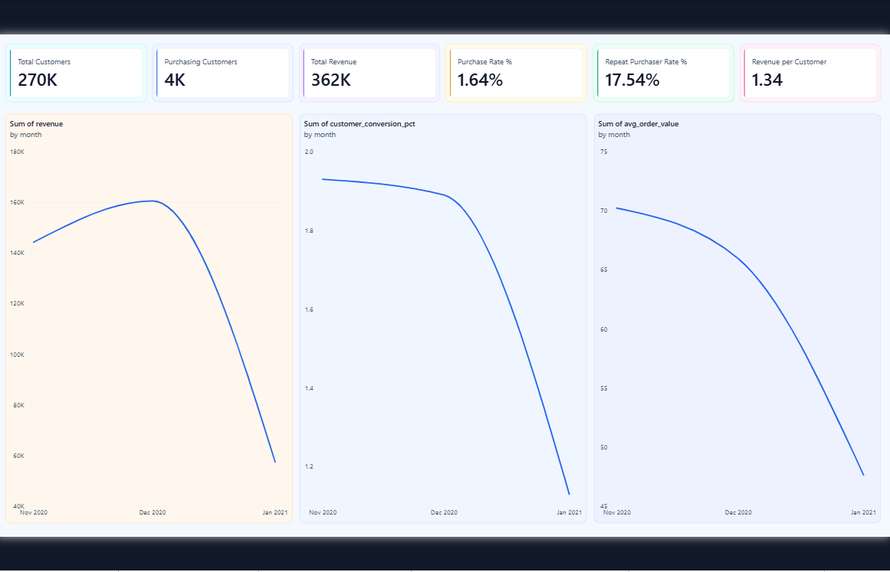
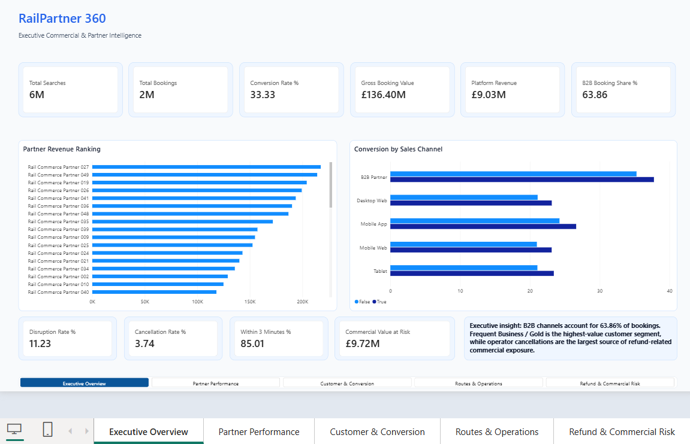

Business Intelligence
Executive dashboards, KPI design, DAX, Power Query, Power BI and decision-focused reporting.
Data Analytics • Business Intelligence • Data Science • Explainable AI
Oluwatosin Mulero — Data Analyst | Business Intelligence | Data Scientist
MSc Data Science professional building rigorous analytical workflows, executive BI, machine-learning systems and reproducible portfolio case studies using SQL, Python, Power BI, PostgreSQL, XGBoost, SHAP, MLflow and modern data tooling.
Profile
I combine business interpretation, statistical reasoning, BI development and machine learning to produce work that is technically defensible, reproducible and easy for decision-makers to use.
Executive dashboards, KPI design, DAX, Power Query, Power BI and decision-focused reporting.
SQL transformations, PostgreSQL, BigQuery, data validation, quality controls and reusable analytical layers.
Feature engineering, model benchmarking, XGBoost, LightGBM, Optuna, calibration and explainability.
Git, GitHub Actions, Pytest, MLflow, FastAPI, Streamlit, model cards, monitoring and documented limitations.
Capability matrix
Each technology below is represented in the published project portfolio or supporting workflow.
Selected work
The website and GitHub profile now use the same project order, the same evidence and the same portfolio narrative.

Machine Learning • Explainable AI • MLOps
Production-style credit-risk workflow covering model benchmarking, Optuna tuning, probability calibration, cost-sensitive thresholding, SHAP explainability, subgroup auditing, MLflow tracking, FastAPI, Streamlit and CI.
Python • XGBoost • LightGBM • Optuna • SHAP • MLflow • FastAPI • Streamlit • Pytest • GitHub Actions
Portfolio demonstration using a public historical benchmark dataset; not intended for live underwriting decisions.

Commercial Analytics • Power BI • Forecasting
End-to-end commercial analytics combining SQL, Python, Power BI, customer segmentation, forecasting and reproducible experimentation.
SQL • Python • pandas • Power BI • DAX • Power Query • PBIP • PBIR • TMDL • Forecasting
Synthetic A/B and marketing-spend examples are explicitly labelled as synthetic in the project.

Analytics Engineering • B2B Rail • Power BI
End-to-end rail retail analytics platform combining PostgreSQL, dbt, Python and Power BI to analyse customer conversion, B2B partner performance, route reliability, operational disruption and refund-related commercial exposure.
PostgreSQL • SQL • dbt • Python • pandas • Power BI • DAX • PBIP • PBIR • TMDL • Analytics Engineering
Transaction-level rail data is synthetic and contains no proprietary Trainline or customer data.

Healthcare Analytics • SQL • Power BI
Provider benchmarking, four-hour performance, 12-hour waits, regional variation and patient-flow analysis.
Python • PostgreSQL • SQL • Power BI • DAX • Power Query

E-Commerce • RFM • Logistics
Commercial, customer, logistics and retention analytics with PostgreSQL, SQL, Power BI and RFM segmentation.
PostgreSQL • SQL • Power BI • DAX • RFM • Logistics Analytics

Mobility Analytics • Behaviour • Power BI
Large-scale bike-share analysis comparing member and casual rider patterns across time, duration and seasonality.
Python • pandas • Parquet • Power BI • DAX • Power Query

Wellness Analytics • Behaviour • Power BI
Fitbit activity and sleep analysis exploring behaviour, sedentary time, calories, sleep and user-level patterns.
Python • pandas • Power BI • Behavioural Analytics
Portfolio standard
Each flagship repository is presented as a case study, not just a collection of files.
Business problem, technical approach, measurable outcomes and clear technology stack.
Source-controlled pipelines, documented setup, structured outputs and automated quality checks.
Architecture documentation, model evaluation, SQL/BI assets, feature engineering and validation evidence.
Limitations, synthetic-data disclosures, non-causal interpretation and model-governance boundaries are explicit.
Education
Data analytics • machine learning • statistical modelling • data-driven problem solving